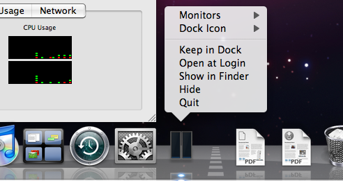
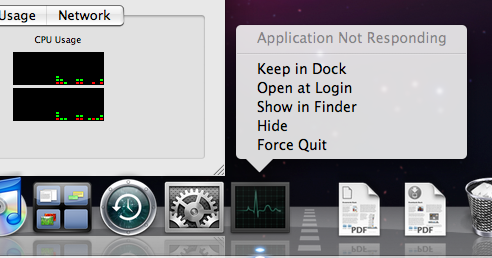
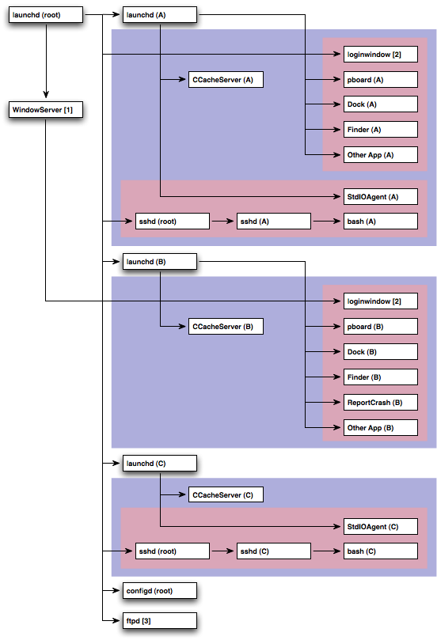
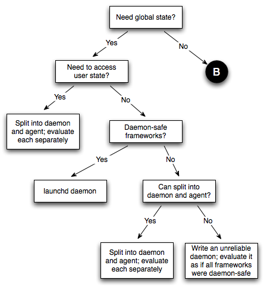
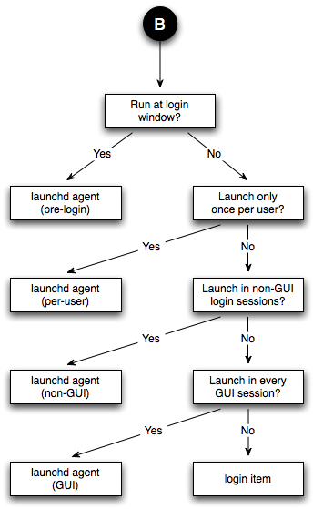
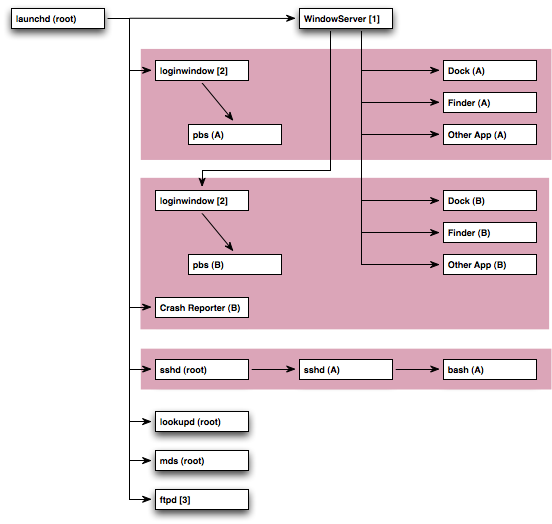
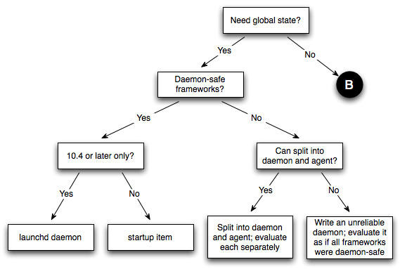
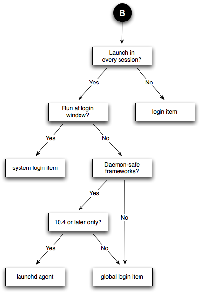

|
IntroductionMany problems can be solved by programs running in the background. These programs have no graphical user interface (GUI), and only interact with the user indirectly. For example:
This technote discusses the issues associated with writing programs that run in the background. It starts with a formal definition of the types of background programs that you can write (Daemonomicon). It then goes on to discuss the unusual execution contexts encountered by background programs (Execution Contexts) and how Mac OS X uses layered frameworks to manage the issues raised by these contexts (Layered Frameworks). It also offers advice about how to create a background program, starting with some general design recommendations (Design Considerations), followed by advice on launching a background program (Getting Launched) and how to communicate between the various components of the program (Daemon IPC Recommendations). Finally, there are some specific coding recommendations (Coding Recommendations) and some miscellaneous hints and tips (Hints and Tips). Before reading this technote, you should look at the formal documentation for System Startup Programming and Multiple User Environments. IMPORTANT: This technote strives to clearly explain complicated topics. In many cases, the best way to make a particular point is to offer a concrete example. These examples show detailed information about how the system is implemented. It's important that you concentrate on the point of the example, rather than the specific implementation details which may change in the future. In cases where the implementation is different on older systems, or is likely to change in the future, the text warns you about these changes. The examples in this technote are from Mac OS X 10.5. Note: A previous version of this technote described Mac OS X 10.4. The specific details related to Mac OS X 10.4 have been moved to a separate section, Old Systems and Technology, at the end of the technote. Where appropriate, these changes are also called out in the text. DaemonomiconThere are a variety of terms used to describe programs that run in the background. In many cases the same term is used by different people to mean different things. This section defines the terms used throughout the rest of the technote. A background program is a program that runs in the background, without presenting any significant GUI. This category is subdivided into daemons (system wide background programs) and agents (which work on behalf of a specific user). The next two sections describe these subdivisions in detail. DaemonsA daemon is a program that runs in the background as part of the overall system (that is, it is not tied to a particular user). A daemon cannot display any GUI; more specifically, it is not allowed to connect to the window server. A web server is the perfect example of a daemon. Note: If you're coming from a traditional UNIX background, be aware that modifying Historically, Mac OS X had a number of different ways to start daemons (for details, see Deprecated Daemonomicon). On current systems there is only one recommend way: launchd. A launchd daemon is configured by a sophisticated property list file. This file allows the daemon to be launched based on a variety of criteria (connections to listening sockets, items being modified in the file system, periodically, and so on). For details, see the launchd.plist man page. A third party launchd daemon should be installed by adding a property list file to the It is important to realize that not all launchd daemons interact with
Keep in mind that, regardless of how it interacts with For more information about launchd daemons, read the launchd documentation. AgentsAn agent is a process that runs in the background on behalf of a particular user. Agents are useful because they can do things that daemons can't, like reliably access the user's home directory or connect to the window server. A calendar monitoring program is a good example of an agent because:
The difference between an agent and a daemon is that an agent can display GUI if it wants to, while a daemon can't. The difference between an agent and a regular application is that an agent typically displays no GUI (or a very limited GUI). Agents have acquired a variety of different names over the years. These include background-only applications (BOAs), faceless background-only applications (FBAs), and UI elements (implying that the agent displays some GUI, but is not a full blown application with a menu bar). These names are more-or-less irrelevant to this discussion. What is relevant, and what distinguishes different types of agents, is how the agent is launched. Note: Users familiar with traditional Mac OS might describe an FBA or a BOA as a daemon; this is not correct on Mac OS X, where FBAs and BOAs are agents, and agents are quite different from daemons. Note: Sharp-eyed readers will note that one process on the system, Login ItemA login item is launched when the user logs in using the GUI. A login item can be any openable item, but it is typically an application or an agent. You can install a login item using the shared file lists interface to Launch Services (see the Global Login ItemA global login item is a login item that is launched when any user logs in. Installing a global login item is roughly equivalent to installing that login item for all users on the system: every time a user logs in, In Mac OS X 10.5 and later you can install a global login item using the shared file lists interface to Launch Services. IMPORTANT: Prior to Mac OS X 10.5 there is no supported way to install a global login item. If you need this functionality, please contact Developer Technical Support (DTS). launchd AgentA launchd agent is like a launchd daemon, except that it runs on behalf of a particular user. It is launched by A third party launchd agent should be installed by adding a property list file to the WARNING: Prior to Mac OS X 10.5, launchd agents were not particularly useful because there was no way for the agent to specify the type of login session that the agent required (r. 4255854) . Thus, you couldn't use a launchd agent as the equivalent of a global login item because it might be launched in the context of non-GUI login session. Mac OS X 10.5 has addressed this limitation, as described below. However, if you have to support older systems, you should investigate some of the alternative technologies described in Deprecated Daemonomicon. launchd agents are further classified by their target session type, as shown in Table 1. Table 1 : Types of launchd agent
To run your agent in a particular session type, use the session type strings from Table 1 as the value of the If you set Finally, there are some significant gotchas associated with developing a pre-login launchd agent; see Sample Code 'PreLoginAgents' for more information. Ancient Daemons (and Agents)For information about older ways to launch daemons and agents, see Deprecated Daemonomicon. Execution ContextsMost Mac OS X programmers are familiar with the user ID (UID) associated with a process (commonly referred to as the process's owner). On a traditional BSD system, this UID control the capabilities of that process. You can, more or less, assume that two processes with matching UIDs have the same capabilities. This is not true on Mac OS X. There are other elements of the process's context that significantly alter its capabilities. So, for example, a daemon whose UID is set to that of the logged in console user is not equivalent to an application that has been launched by that user. The following sections describe the elements of process's context, and how they affect background programs. UIDs and GIDsA process's UIDs (its effective (EUID), real (RUID), and saved (SUID) UIDs) are the most well known elements of the process's context. These UIDs control various capabilities of the process, mostly centered on the BSD portions of the system (file system, networking, BSD process control). For example, a process's ability to open a file is controlled by its EUID, and its ability to signal another process is controlled by its EUID and the EUID and RUID of the target. Processes also have a set of group IDs (GIDs) that are analogous to the UIDs, plus a list of supplemental group IDs. For more information about these UIDs and GIDs, and how they affect the capabilities of your process, see Security Overview. Mach Bootstrap BasicsMany Mac OS X subsystems work by exchanging Mach messages with a central service. For such a subsystem to work, it must be able to find the service. This is typically done using the Mach bootstrap service, which allows a process to look up a service by name. All processes inherit a reference to the bootstrap service from their parent. To get an idea of how this works, you can run launchctl with the Listing 1: BootstrapDump from Terminal $ launchctl bslist D com.apple.rcd A com.apple.finder.ServiceProvider A com.apple.systemuiserver.ServiceProvider A com.apple.systemuiserver-ServicesPortName A com.apple.dockling.server A com.apple.SUISMessaging A com.apple.ipodserver A com.apple.dock.server D BezelUI D edu.mit.Kerberos.KerberosAgent.ipcService [...] As you can see, there are numerous services published via the bootstrap service. Virtually all of them are private. For example, you are not expected to send messages directly to the "com.apple.dock.server" service; rather, you would call a routine exported by a framework (perhaps Bootstrap NamespacesThe previous example raises an interesting point: which Dock does The solution to these problems is that the bootstrap service can create multiple bootstrap namespaces. Each login session has its own bootstrap namespace, to which all processes running in that session inherit a reference. So, when the Dock registers its service, the registration goes into that login session's namespace. Any other process within that session inherits a reference to the same namespace, and can, therefore, see the Dock's service. Processes in other login sessions reference a different namespace, which prevents them from seeing that service. However, they might be able to see a different instance of the Dock that's registered in their namespace. It's worth noting the distinction between GUI and non-GUI per-session bootstrap namespaces. A GUI per-session bootstrap namespace is instantiated by the GUI infrastructure ( Note: Prior to Mac OS X 10.3, non-GUI login sessions ran in the global bootstrap namespace. Note: Non-GUI per-session bootstrap namespaces are created by In Mac OS X 10.5 and later these non-GUI namespaces are, after the user has logged in, moved below the per-user bootstrap namespace by the launchd PAM module ( Namespace HierarchyBootstrap namespaces are arranged hierarchically. There is a single global bootstrap namespace. Below that is a per-user bootstrap namespace for each user on the system, and below each of those is a per-session bootstrap namespace for each login session. You can print a map of the namespaces on the system using the Listing 2: Bootstrap Namespace Hierarchy $ sudo BootstrapDump MAP
Password:********
0x0
launchd (root, 1/0)
launchd (quinn, 82/1)
0x30b
kextd (root, 7/1)
DirectoryService (root, 8/1)
notifyd (root, 9/1)
configd (root, 10/1)
[...]
0x10f
0x100b
sshd (root, 443/1)
sshd (quinn, 447/443)
bash (quinn, 449/447)
BootstrapDump (root, 477/449)
0x20b
loginwindow (root, 24/1)
ARDAgent (root, 92/82)
Spotlight (quinn, 94/82)
UserEventAgent (quinn, 95/82)
Dock (quinn, 97/82)
AppleVNCServer (root, 98/92)
pboard (quinn, 99/82)
SystemUIServer (quinn, 100/82)
Finder (quinn, 101/82)
ATSServer (quinn, 102/82)
Note: Per-user bootstrap namespaces did not exist prior to Mac OS X 10.5. If a process running within a namespace registers a service, it is visible in that namespace and any of its descendent namespaces. However, it is not visible in any other namespaces. In practice, this means that:
You can use Listing 3: Dumping the global bootstrap namespace $ # The killall goop in the following command is a sneaky way $ # to get the process ID for a process name. $ # $ pid=`sudo killall -s kextd | cut -f 3 -d ' '` $ sudo launchctl bslist $pid [...] A com.apple.KernelExtensionServer D com.apple.KerberosAutoConfig D com.apple.java.updateSharingD D com.apple.installdb.system D com.apple.IIDCAssistant D com.apple.system.hdiejectd D com.apple.gssd A com.apple.FSEvents [...] $ sudo launchctl bslist $pid | grep dock $ # No results because Dock is not registered in the global namespace. IMPORTANT: You should not rely on the ability to dump the global bootstrap namespace programmatically. The techniques used in this section are not something that Apple intends to support in the long term; they're appropriate for debugging and illustrative purposes, but you should not ship programs that rely on them. So the "com.apple.KernelExtensionServer" service is registered in the global bootstrap namespace, and can be seen by all processes on the system. On the other hand, "com.apple.dock.server" service (from Listing 1) is registered in the per-session namespace and can only be seen by processes using that namespace. So, the rules to remember are:
If you don't follow these rules, things might look like they're working, but you'll run into obscure problems down the line. The next section gives an example of one such problem. This is but one example; there are many more potential problems. The only guaranteed way to avoid such problems is to follow these rules, which are discussed further in Layered Frameworks. Namespace ExplorationAll of this might seem a little theoretical, and you're probably wondering how it affects you. Let's make things crystal clear by looking at a concrete example of how bootstrap namespaces affect application functionality.
IMPORTANT: The fact that a copy of Activity Monitor running from an SSH session can display any GUI is quite surprising. This works because Activity Monitor has connected to the global window server service, a subject discussed in detail in the next section. Figure 1: Activity Monitor's presence in the Dock  Figure 2: Activity Monitor launched from an SSH session  Window ServerThe window server (on Mac OS X 10.5 this is IMPORTANT: The window server does more than just manage windows. Even an application with no user interface (like a background-only application) depends on the window server. Most of the services provided by the window server are implemented using Mach messages. Thus, to use the window server reliably, you must inherit a reference to a valid GUI per-session bootstrap namespace. This is an expected consequence of the rules given earlier. What's unexpected, however, is that applications do work (somewhat) if you run them from outside of a GUI login session (that is, if they inherit a reference to the global bootstrap namespace, or some other non-GUI bootstrap namespace). This is because the window server advertises its services in the global bootstrap namespace! This is known as the global window server service. The reasons for this non-obvious behavior are lost in the depths of history. However, the fact that this works at all is pretty much irrelevant because there are important caveats that prevent it from being truly useful. The following sections describe these caveats in detail. WARNING: Apple plans to disable the global window server service in a future release of Mac OS X. Do not write any new code that uses the global window server service. If you have existing code that uses this service, you must eliminate that dependency in order to be compatible in the long term. See The Perils of the Monolith for specific advice on structuring your code to avoid this problem. More Than Window ServerThe window server is not the only service that's required for an application to function correctly. As described earlier, the Dock service is also required, and it is only registered in GUI per-session bootstrap namespaces. There are many other services like this. Permission To ConnectThe console user is the user whose GUI login session is using the console. The console device, A process can only use the global window server service if its EUID is 0 (it's running as root) or matches the UID of the console user. All other users are barred from using it. For a demonstration of this, you can SSH to your own machine and try to run Activity Monitor from your shell. Listing 6 shows an example of doing this from Terminal. The first attempt to run Activity Monitor command works because it's running as the same user as Terminal. The second attempt fails because the test user ( Listing 6: Accessing the window server from console and non-console users $ ssh ${USER}@localhost
Password:********
Last login: Wed Jun 20 11:49:23 2007
$ id
uid=502(quinn) gid=20(staff) groups=20(staff),81(_appserveradm),
104(com.apple.sharepoint.group.1),79(_appserverusr),80(admin),
101(com.apple.access_remote_ae),103(com.apple.access_ssh-disabled)
$ ls -l /dev/console
crw------- 1 quinn staff 0, 0 Jun 20 11:50 /dev/console
$ # Launch Activity Monitor and then quit it.
$ /Applications/Utilities/Activity\ Monitor.app/Contents/MacOS/\
Activity\ Monitor
$ logout
Connection to localhost closed.
$ ssh mrgumby@localhost
Password:********
Last login: Wed Jun 20 11:49:23 2007
$ id
uid=503(mrgumby) gid=20(staff) groups=20(staff),105(com.apple.sharepoint.group.2),
104(com.apple.sharepoint.group.1)
$ ls -l /dev/console
crw------- 1 quinn quinn 0, 0 Oct 3 21:31 /dev/console
$ # Activity Monitor fails to launch at all.
$ /Applications/Utilities/ctivity\ Monitor.app/Contents/MacOS/Act
_RegisterApplication(), FAILED TO establish the default connection to \
the WindowServer, _CGSDefaultConnection() is NULL.
2007-06-20 11:54:31.798 Activity Monitor[863:10b] An uncaught exception
was raised
[...]
Trace/BPT trap
$ logout
Connection to localhost closed.
This limitation makes it very hard to reliably use the global window service because:
Window Server LifecycleThe final nail in the coffin of the global window server service relates to the window server lifecycle. Contrary to what you might expect, the window server is not always running. Rather, at certain times (see the note below), the window server quits and is relaunched by Note: The exact condition under which the window server quits is implementation-specific, and you should not depend on it. Currently (Mac OS X 10.5) the window server quits when the last GUI login session ends, which is not necessarily when the last GUI users logs out. You can see this in action using the program from Listing 7. This program monitors the foreground application using Carbon Events, which requires it to connect to the window server. Listing 7: A simple program that connects to the window server #include <assert.h>
#include <stdio.h>
#include <stdlib.h>
#include <Carbon/Carbon.h>
static OSStatus EventHandlerProc(
EventHandlerCallRef inHandlerCallRef,
EventRef inEvent,
void * inUserData)
{
fprintf(stderr, " Switch\n");
return noErr;
}
int main(int argc, char **argv)
{
static const EventTypeSpec kEvents[] = {
{ kEventClassApplication, kEventAppFrontSwitched}
};
OSStatus err;
err = InstallEventHandler(
GetApplicationEventTarget(),
NewEventHandlerUPP( EventHandlerProc ),
sizeof(kEvents) / sizeof(kEvents[0]),
kEvents,
NULL,
NULL
);
assert(err == noErr);
while (true) {
fprintf(stderr, "Running runloop\n");
RunApplicationEventLoop();
}
return EXIT_SUCCESS;
}
To test this, you have to log in using SSH from a different machine (because Terminal will hold up the GUI logout if there is a process running in one of its windows). Listing 8 shows what this session might look like. Listing 8: Death by GUI logout $ ssh victim.local. Password:******** Last login: Thu Jun 21 09:05:00 2007 victim$ ./AppSwitchMonitor Running runloop Switch Switch Switch Running runloop Killed victim$ echo $? 137 To replicate this yourself, do the following.
This program is killed because the window server keeps track of the processes that are using its services. When you log out, the system (actually The situation for non-GUI processes is slightly different: The upshot of this is that, if your process connects to the window server, it will not survive a normal logout. There are other issues related to the window server lifecycle that cause problems for daemons. Even if you don't actually connect to the window server, you can still get into trouble if your daemon registers services in the per-session bootstrap namespace. When the window server quits, any per-session bootstrap namespaces created by that window server are deactivated. For more information about this, see Bootstrap Namespaces: One More Thing. Pre-Login Trust IssuesIf, in Mac OS X 10.5 and later, you see a message like that shown in Listing 9 you might mistakenly think that the solution is to get the system to 'trust' your application, perhaps via code signing. Listing 9: Pre-Login Trust Message Untrusted apps are not allowed to connect to or launch Window Server before login. However, this isn't the case (r. 5544764) . This message is really telling you is that you're trying to connect to the window server from the wrong context. You see this message if you try to connect to the global window server service from outside of the pre-login context before the user has logged in; typically this means that you're trying to use the window server from a daemon. You should not attempt to fix this by convincing the window server to trust your program; doing so will just cause other problems further down the road. For example, if you do successfully connect to the window server from your daemon, you still have to deal with window server lifecycle issues described previously. Instead, you should fix this problem by changing your code to run in the correct context. If you need to connect to the window server in a pre-login context, create a pre-login launchd agent. For an example of this, see Sample Code 'PreLoginAgents'. Security ContextThe security context is another piece of execution context associated with a process. The security context is explicitly managed by the Mac OS X security server ( Note: The only case where the security context and bootstrap namespace are not tied together is if you create your own bootstrap namespace. In most cases the security context is not directly relevant to your program; more often than not, the bootstrap namespace is the thing that trips you up. On the other hand, the security context has one nice attribute: you can get useful information about the context using the The first is the session identifier, a 32-bit number that uniquely identifies this session. This can be helpful in a number of places. For example, if you want to create a shared memory object (perhaps using shm_open) whose scope is limited to processes running within a particular login session, you can fold the session identifier into the object's name. Thus, two shared memory objects from different session won't collide in the shared memory object namespace, and client processes within the login session can easily find the correct shared memory object. Additionally,
IMPORTANT: The Execution Context SummaryTable 2 shows how the execution context of your daemon or agent is affected by the mechanism used to launch it. Table 2 : Context Cross Reference
Note: This table only covers recommended technologies. For information about deprecated technologies, see Execution Context Summary for Deprecated Technologies. Notes:
Execution Context ExampleFigure 3 is graphical example of this information. Each box is a process. The text after the process name is either the UID of that process (text in round brackets) or a note that you can look up below (text in square brackets) or both. A directed line represents the parent/child relationship between two processes. Each blue box represents a per-user bootstrap namespace. Each red box represents a per-session bootstrap namespace. Items that aren't in any shaded box are in the global bootstrap namespace. There are two GUI login sessions (user A logged in first and then fast user switched to user B) and two non-GUI login session (user A and user C). Figure 3: Process relationships  Notes:
As you look at Figure 3, consider the various different types of process that it shows.
WARNING: This example was taken from Mac OS X 10.5. It is included for illustrative purposes only. The exact relationship between the various processes running on the system has changed in the past and is likely to change in the future. Note: For an equivalent example taken from Mac OS X 10.4, see Execution Context Example on Mac OS 10.4. Layered FrameworksMost Mac OS X functionality is implemented by large system frameworks. Many of these frameworks use Mach-based services that they look up using the bootstrap service. This can cause all sorts of problems if you call them from a program which references the wrong bootstrap namespace. Apple's solution to this problem is layering: we divide our frameworks into layers, and decide, for each layer, whether that layer supports operations in the global bootstrap namespace. The basic rule is that everything in CoreServices and below (including System, IOKit, System Configuration, Foundation) should work in any bootstrap namespace (these are daemon-safe frameworks), whereas everything above CoreServices (including ApplicationServices, Carbon, and AppKit) requires a GUI per-session bootstrap namespace. The only fly in this ointment is that some frameworks aren't properly layered. QuickTime is a perfect example of this. Because of its traditional Mac OS heritage, QuickTime isn't clearly layered into 'core' and 'application' frameworks. Rather, there is one big framework, and its not documented which bits work from a daemon. The only way to be one hundred percent safe is to not use frameworks like these, but that isn't an option for many developers. You can, however, minimize the risk by restricting the set of routines that you call. Living Dangerously describes this idea in more detail. In summary, the concrete recommendations are:
Living DangerouslyIf your daemon uses frameworks that aren't daemon-safe, you can run into a variety of problems.
The upshot of this is that, if your daemon links with a framework that's not daemon-safe, you can't predict how it will behave in general. It might work on your machine, but fail on some other user's machine, or fail on a future system release, or fail for different input data. You are living dangerously! If you must call a framework that's not daemon-safe from your daemon, you should start by filing a bug describing what you're doing and why. Apple will consider your input as it develops future system software. Next, you should try to minimize the number of potentially unsafe routines that you call. This will reduce (but not eliminate) the compatible risk. Finally, you should test your daemon on a wide variety of platforms. And make sure you test with the pre-release builds Mac OS X that are available via Apple's developer software seeding program. Framework Cross ReferenceTable 3 summarizes which frameworks are daemon-safe. Table 3 : Daemon-Safe Frameworks
Notes:
This table lists the frameworks as of Mac OS X 10.5. If a framework is not listed here, it is best to assume that it is not daemon-safe. If you're interested in the status of a subframework, and that subframework is not listed here, you should look up the status of the framework's umbrella. For example, you can tell that the OSServices framework is safe because its umbrella framework, CoreServices, is safe. If a framework is listed as safe, it will continue to be safe in future system releases. If a framework is listed as not being safe, it may become safe in future releases. Design ConsiderationsThis section lists some important points that you should consider when designing a background program. Is It Necessary?When contemplating a background program, the first thing to consider is whether you need it at all. Background programs consume resources all the time (although you can minimize the resources they consume by launching on demand), so if you can avoid using one you'll be doing the user a favor. Also, a background program can make the system less robust because it introduces a common point of failure (in this respect, a daemon is worse than an agent, which is worse than no background program at all). On the other hand, using a background program is often better than using a convoluted mechanism for distributed state management. If you've decided to implement a background program, you must then determine whether you need an agent or a daemon. The main reason for using a daemon is that you need to share some state between multiple processes in different login sessions. If you don't need this, consider using an agent. The Perils of the MonolithA common question we get in DTS is "How can I launch a GUI application from my daemon?" The answer is that you can't. This is a direct consequence of Mac OS X's layered architecture: a daemon can't launch a GUI application because the daemon is running in the wrong context. Even if it could choose which context to run the GUI application in, which would it choose? And what happens if the computer is sitting at the login window, which means there are no valid GUI contexts? Note: In Mac OS X 10.5 and later it is possible to launch a GUI application from a daemon by calling Launch Services. However, this capability comes with a number of caveats that make it difficult to use in practice. See Process Manager and Launch Services for details. The correct solution to this problem is to split your program into multiple components, each specialized for a particular role. So, you might have a daemon for managing the global state and an agent operating on behalf of each of the logged in users. If the daemon needs the user to answer a question, it signals all the agents and the agents use local knowledge to decide what to do. For example, the agent might behave differently depending on whether it's running in a GUI or non-GUI login session, or whether the GUI session is active (that is, using the console in a fast user switched environment). The nice thing about this approach is that it simplifies the daemon's state. The daemon just knows that it's expecting one of the agents to provide the answer to the question; it doesn't care how many agents there are, what type of login context they're running in, or how they go about interacting with the user. The Client/Server ModelIf you do split your program into multiple components, try to use the client/server model. Specifically, remember that clients connect to servers, and not the other way around. This might sound obvious, but it's easy to forget this point and find yourself in the weeds. In this context, a server is the background program that contains the global state that's being shared, while the clients are the programs that want to access that state. The server might be an agent (if all of the clients run in the same login session), or it might be a daemon (if it handles clients from multiple login sessions, or it handles other daemons as clients); the key point is that there is a one-to-many relationship between the server and its clients. In this design, the server should not try to discover or connect to the clients. Rather, the clients should connect to the server. This approach is a good match for the common inter-process communication (IPC) APIs. For example, if you're using UNIX domain sockets, it's easy for a daemon to listen on a single UNIX domain socket and have the clients connect to that socket. It's also easy for the server to handle a client disconnecting (either because it quit or because it died unexpectedly). If you do things the other way around, things start to get messy. Getting LaunchedOnce you've got the basic design under control, you need to decide how to launch each component. Figure 4 and Figure 5 show how you can evaluate your needs to come up with the best approach. IMPORTANT: These figures assume that you're targeting Mac OS X 10.5 and later. If you must support earlier systems, you should look at the equivalent figures in Getting Launched Prior To Mac OS X 10.5. Figure 4: Launching a daemon  Figure 5: Launching an agent  As this algorithm shows, Apple recommends that, where possible, you implement background programs using launchd. The reasons for this are:
Daemon IPC RecommendationsMost daemons use some sort of inter-process communication (IPC) to communicate between the daemon and its clients. If you're writing a daemon, one of your first design decisions should be the IPC mechanism to use. This section describes the pitfalls of using Mach message-based IPC in your daemon, and why you should consider UNIX domain sockets as an alternative. IMPORTANT: The recommendations in this section are most important when writing a daemon that communicates with clients in a different bootstrap namespace. If all of the processes run in the same bootstrap namespace, you can ignore these recommendations. For example, if you're writing an agent and all of the clients are GUI applications in the same login session, it's perfectly reasonable to communicate using Apple events. Mach Considered HarmfulThe Mach APIs represent the lowest level interface to the kernel. As such, they are the most likely to change as the system evolves. Apple has consistently recommended that third party developers avoid them. This applies to daemons and agents as it does to everything else. However, in the case of daemons and agents, Mach APIs are particularly troublesome because you have to worry about bootstrap namespaces. While it's possible—some would even claim easy—to manage bootstrap namespaces correctly, it's better to just avoid the problem altogether by avoiding Mach APIs. Apple's general recommendation for avoiding the use of Mach APIs includes the advice that it's better to use high-level wrappers. For example, rather than send and receive Mach messages using Mach APIs directly, it's better to use the higher-level CFMessagePort API. This is good advice in general; but, if you're writing a daemon or agent, you will still run into bootstrap namespace problem. Under the covers, The high-level IPC APIs that are most likely to trip you up are:
Overall, it is easier to just avoid Mach messages entirely. Mac OS X provides numerous alternative IPC mechanisms. My personal favorite is UNIX domain sockets. UNIX Domain Sockets Are Your FriendUNIX domain sockets are somewhat like TCP/IP sockets, except that the communication is always local to the computer. You access UNIX domain sockets using the same BSD sockets API that you'd use for TCP/IP sockets. The primary difference is the address format. For TCP/IP sockets, the address structure (that which you pass to When the server binds to a UNIX domain socket, the system creates a file system object that represents the socket. For example, the PPP daemon's UNIX domain socket is Listing 10: Looking at PPP's UNIX domain socket $ ls -l /var/run/pppconfd srwxrwxrwx 1 root daemon 0 9 May 12:57 /var/run/pppconfd Once the server is running, the client can connect to it by simply passing this path to the To learn more about UNIX domain sockets, consult any standard UNIX reference. I particularly recommend UNIX Network Programming by Stevens et al. For an example of using UNIX domain sockets in a client/server environment, see Sample Code 'CFLocalServer'. Advantages of UNIX Domain SocketsWhen implementing a daemon, the UNIX domain sockets API offers a number of advantages over other IPC mechanisms.
Best PracticeWhen using UNIX domain sockets, keep in mind the following points.
Cross Architecture IPCRegardless of what IPC mechanism you use, you will have to deal with cross-architectural issues. For example, a given daemon may have clients that have a different:
You must design your IPC mechanism to cope with these issues. Common strategy include:
Alternatively, require that all clients be of the same architecture. Coding RecommendationsThe following sections list various coding recommendations for background programs. Launching On DemandTo minimize your use of system resources, it's best to launch your background program (daemon or agent) on demand. That is, rather than always launching at startup (or, for an agent, at login), your program only launches when its services are required. The basic strategy for launching on demand is:
The launch criteria supported by Table 4 : Launch Criteria
Notes:
By default Table 5 : Launch behavior versus launchd properties
As you can see, the Daemons Accessing User StateIt is not possible for a daemon to act on behalf of a user with 100% fidelity. While this might seem like a controversial statement, it's actually pretty easy to prove. For example, consider something as simple as accessing a preference file in the user's home directory. It's not possible for a daemon to reliably do this. If the user has an AFP home directory, or their home directory is protected by FileVault, the volume containing the home directory will only be mounted when the user is logged in. Moreover, it is not possible to mount the that volume without the user's security credentials (typically their password). So, if a daemon tries to get a user preference when the user is not logged in, it will fail. In some cases it is helpful to impersonate the user, at least as far as the permissions checking done by the BSD subsystem of the kernel. A single-threaded daemon can do this using seteuid and setegid. These set the effective user and group ID of the process as a whole. This will cause problems if your daemon is using multiple threads to handle requests from different users. In that case you can set the effective user and group ID of a thread using LoggingIn most cases you will want your background program to log information about its activity. These logs are useful during initial bring up, and can also help the user troubleshoot problems. Mac OS X supports a number of different logging facilities. Apple System LogThe Apple System Log (ASL) is a logging facility introduced in Mac OS X 10.4. It allows you to create flexible, structured log entries. It also allows you to write management tools that query these logs. For information about ASL, see its man page. For an example of its use, see Sample Code 'SampleD'. SyslogSyslog is a traditional BSD logging facility. It allows you to log (relatively unstructured) messages, and configure how those messages are processed. For information about syslog, see the man pages for the syslogd, syslog, and logger programs; for the syslog.conf configuration file; and for the syslog API. Logging With printfIf you're creating a launchd daemon or launchd agent,
If you're not a launchd daemon or launchd agent, the situation is more complex.
Daemon Security ConsiderationsBy definition, a daemon is a system-wide service. Thus, when creating a daemon, you need to worry about security. While a detailed discussion of secure programming is outside the scope of this document, here's a short list of things that you should consider.
For more information about writing secure software, consult one of the numerous texts available on the topic. I highly recommend Building Secure Software. Agents and Fast User SwitchingIf you're writing an agent, you should be aware of the subtleties associated with fast user switching. For example, your agent might need to know:
For the detailed information about this, see Multiple User Environments. Process Manager and Launch ServicesHistorically, neither Process Manager nor Launch Services were daemon safe. This represents a significant gotcha for daemon writers who, quite reasonably, expect that process services should be available to a daemon. However, if you look at the these APIs in their historical context, you can understand why this restriction existed. Consider the Process Manager routine Launch Services, which is layered on top of the Process Manager, had similar issues. Thus, both Process Manager and Launch Services have, historically, been located in the ApplicationServices framework, and were not available to daemons. Apple recognizes that this restriction is quite inconvenient and is working to improve things. Mac OS X 10.5 represents the first step on that path. Specifically, the underlying implementation of Process Manager has moved from the window server to the CoreServices daemon ( The first beneficiary of this change in Launch Services. In Mac OS X 10.5 Launch Services has been moved down to the Core Services layer (it is now a subframework of the CoreServices framework). Thus, it is now daemon-safe. This raises the question of what happens when you use Launch Services to launch an application from a daemon. Because the daemon is running in the global bootstrap namespace, Launch Services can't use the bootstrap namespace to derive the login session. Rather, Launch Services uses the EUID of the calling process. The behavior is as follows:
Unfortunately, while the underlying implementation of Process Manager is now at the CoreServices layer, Process Manager itself remains in the ApplicationServices framework. Thus, it's still not possible to use Process Manager from a daemon. Hints and TipsThis section describes various hints and tips that you might find useful when developing a background program. Starting a DaemonIf you're writing a daemon, you may encounter problems when you start the daemon immediately after installing it. There are two essentially conflicting requirements.
There are a number of ways that you can resolve this conundrum, listed in order of most- to least-preferable.
Note: Debugging StartupBecause background programs are usually run indirectly (that is, they're sublaunched by a system service, such as
Listing 11: Pausing at startup if (1) {
fprintf(
stderr,
"Process %ld waiting for debugger.\n",
(long) getpid()
);
pause();
}
Note: If your program is running as a different user, you will have to start GDB as that user, or root, in order to attach to and debug it. You typically do this using Debugging Rogue Window Server UseIf your daemon dies with a message like that shown in Listing 6, and you can't think of any reason why it should be attaching to the window server, there are a variety of things you can do to debug the problem. The first is to set the Watch Your Logs!While developing a background program, it's a good idea to habitually monitor its log file. You'd be amazed how often an unexpected log message will let you quickly isolate an obscure problem. This can be as simple as logging using ASL or printf and running the Console application in the background. If you're writing a daemon that's launched at startup time (before you can launch the Console application or even SSH info the machine), you may be able to see its log messages by holding down command-V at startup (for "verbose boot"). To permanently enable verbose boots, add the "-v" argument to your Listing 12: Enabling verbose boots $ sudo nvram boot-args="-v" Password:******** Bootstrap Namespaces: One More ThingThe earlier discussion of bootstrap namespaces (see Bootstrap Namespaces) talked extensively about how they are created, but it glossed over the issue of how they are destroyed. It turns out that a bootstrap namespace exists until the last process that references it quits. So, as long as your process is running, you are guaranteed that your bootstrap namespace will be valid. There is one gotcha, however. When the system creates a bootstrap namespace, it associates it with the process that created it. When that process quits, the namespace is deactivated. For example, if you start a daemon from within an SSH login session and then log out, the process that created the bootstrap namespace (effectively this is A deactivated bootstrap namespace allows you to look up services, but it does not allow you to register new services. Any attempt to register a service in a deactivate namespace will fail with an error Earlier versions of Mac OS X (prior to Mac OS X 10.2) did not deactivate bootstrap namespaces; rather, when the process that created a namespace quits, the bootstrap service would destroy the namespace immediately. Any process still referencing that namespace would find itself without any bootstrap namespace (technically, their bootstrap port would now be a Mach dead name). Apple started deactivating, rather that destroying, bootstrap namespaces as a stopgap measure to improve compatibility for programs that were incorrectly running in the wrong namespace (typically due to a lack of understand of bootstrap namespaces on behalf of the program's author). Future systems may eliminate the concept of deactivated bootstrap namespaces, and thus revert to the pre-10.2 behavior. As long as your program is running in the correct namespace, this should not cause any compatibility problems. Careful With That Fork, EugeneStarting in Mac OS X 10.5 This can cause problems if you're developing a launchd daemon that creates a child process to run some other program (by the traditional fork and exec combination, or via posix_spawn). The child process will inherit its process group ID from your daemon. If your daemon quits before the child process, the child process will receive a There are a number of ways to avoid being tripped up by this, listed below in order of most- to least-preferable.
Note: There are good technical reasons for Traditionally you would isolate the child process from the daemon by having the child call daemon. And, if you did this, the child would indeed end up in a separate process group, and would not be garbage collected by Further Reading
Old Systems and TechnologyThe bulk of this technote reflects the reality of Mac OS X 10.5. This section describes technology from earlier systems that is now deprecated or unsupported, and discusses other topics that do not apply on modern systems. Deprecated DaemonomiconA number of mechanisms used to launch background programs are now deprecated or unsupported. This section describes these mechanisms. IMPORTANT: You should only use these technologies on older systems. We recommend that you update your code to use a supported mechanism on current systems, and only resort to a deprecated mechanism when the recommended mechanism is not available. Startup ItemA startup item is a daemon launched at startup time by the SystemStarter program (which is launched by Starting with Mac OS X 10.4, startup items are deprecated in favor of launchd daemons. IMPORTANT: For compatibility reasons, in Mac OS X 10.4 and later, the system will not start any startup items until the network is up and running. As it often takes a while (many seconds) for the network to come up, you may find that your startup item launches much later than it would on previous systems. The best way around this is to switch to using a launchd daemon. Note: The Accounts preferences panel in Mac OS X 10.3.x used the term "startup item" to refer to login items; this aberrant terminology has been corrected in Mac OS X 10.4 and later. mach_init DaemonA mach_init daemon is launched by the Mach initialization process ( Starting with Mac OS X 10.5, mach_init daemons are deprecated in favor of launchd daemons; a launchd daemon can now specify a list of Mach service names to register as part of its property list file. inetd and xinetd Daemoninetd daemons and xinetd daemons are launched by the Internet super server (originally
Starting with Mac OS X 10.4, inetd and xinetd daemons are deprecated in favor of launchd daemons; a launchd daemon can specify a list of TCP and UDP ports to listen on as part of its property list file. Starting with Mac OS X 10.5, inetd and xinetd daemons are no longer supported. However, it's easy to run an existing inetd or xinetd daemon by creating and installing a simple launchd property list file (resulting in an inetd-compatible launchd daemon). For an example of this, check out For more information about inetd and xinetd daemons, see UNIX Network Programming and xinetd web site. System Login ItemA system login item is a global login item that is launched in each GUI login session before the user logs in. A system login item is useful if you need to use the window server while the login screen is displayed. An example of this is a screen sharing program that allows a remote user to log in via the login window. System login items are deprecated on Mac OS X 10.5 and later (r. 5316827) . You should, instead, use a pre-login launchd agent. WARNING: If you're currently shipping a system login item, you must update your code to be a launchd agent in order to ensure long-term binary compatibility. If you need to develop a system login item for use on systems prior to Mac OS X 10.5, please contact Developer Technical Support (DTS) for details. mach_init AgentA mach_init agent is like a mach_init daemon, except that it runs in the context of a particular user. It is launched (indirectly) by IMPORTANT: mach_init agents are not launched in non-GUI login sessions. Starting with Mac OS X 10.5, mach_init agents are deprecated in favor of launchd agents; a launchd agent can now specify a list of Mach service names to register as part of its property list file. Execution Context Summary for Deprecated TechnologiesTable 6 shows how the execution context of a deprecated background program is affected by the mechanism used to launch it. Table 6 : Context Cross Reference for Deprecated Mechanisms
Notes:
Execution Context Example on Mac OS 10.4Figure 6 is graphical example of execution contexts on Mac OS X 10.4. Before consulting this figure, you should read the up-to-date information in Execution Context Example. This explains the overall thrust of the diagram. The text in this section concentrates on the differences between this diagram and the equivalent diagram for a modern system. In this diagram there are three per-session bootstrap namespaces, two for GUI login sessions (users A and B) and one for an SSH login session (user A). These are represented by red boxes. Items that aren't in any red box are in the global bootstrap namespace. Figure 6: Process relationships in Mac OS X 10.4  Notes:
As you look at Figure 6, consider the various different types of process that it shows.
Differences between this and Mac OS X 10.5 include:
Getting Launched Prior To Mac OS X 10.5Prior to Mac OS X 10.5, IMPORTANT: If you need to support a wide range of systems, you may be required to implement a hybrid approach. For example, if you want to run prior to login on Mac OS X 10.3 through Mac OS X 10.5, you must implement a system login item (for Mac OS X 10.3 and 10.4) and a pre-login launchd agent (for Mac OS X 10.5 and later). Figure 7: Launching a daemon prior to Mac OS X 10.5  Figure 8: Launching an agent prior to Mac OS X 10.5  Obsolete Programming TechniquesThis section covers some programming techniques that are only interesting if you're developing a deprecated background program. DaemonizationIf you're writing a daemon, you may need to isolate your process from the environment that it inherits from its parent. This step is known as daemonization. For the nitty-gritty details, see Advanced Programming In The UNIX Environment; also, see Careful With That Fork, Eugene. Whether daemonization is necessary depends on how you were launched. Table 7 shows this for each type of daemon. Table 7 : Daemonization required?
If you need to daemonize, you can do so using the daemon routine. IMPORTANT: The Daemonization and Bootstrap NamespacesHistorically the Starting with Mac OS X 10.5 the
Daemonizing FrameworksMany Mac OS X frameworks do not work reliably if you call fork but do not call exec. The only exception is the System framework and, even there, the POSIX standard places severe constraints on what you can do between a Under the covers the daemon routine calls fork. Thus, if you call IMPORTANT: In fact, in Mac OS X 10.5 and later, Core Foundation will detect this situation and print the warning message shown in Listing 13. Listing 13: Core Foundation complaining about fork-without-exec The process has forked and you cannot use this CoreFoundation \ functionality safely. You MUST exec(). Break on __THE_PROCESS_HAS_FORKED_AND_YOU_CANNOT_USE_THIS_\ COREFOUNDATION_FUNCTIONALITY___YOU_MUST_EXEC__() to debug. There are two common solutions to this problem:
Listing 14: Using exec to avoid framework problems after daemonization #include <getopt.h>
#include <stdlib.h>
#include <string.h>
#include <sys/param.h>
#include <syslog.h>
#include <mach-o/dyld.h>
extern char ** environ;
int main(int argc, char **argv)
{
if ( (argc >= 2) && (strcmp(argv[1], "daemon") == 0) ) {
optind = 2;
// ... process any post-daemonization arguments ...
// ... run as a daemon ...
} else {
char ** args;
char execPath[PATH_MAX];
uint32_t execPathSize;
// ... process any pre-daemonization arguments ...
// Calculate our new arguments, dropping any arguments that
// have already been processed (that is, before optind) and
// inserting the special flag that tells us that we've
// already daemonized.
//
// Note that we allocate and copy one extra argument so that
// args, like argv, is terminated by a NULL.
//
// We get the real path to our executable using
// _NSGetExecutablePath because argv[0] might be a relative
// path, and daemon chdirs to the root directory. In a real
// product you could probably substitute a hard-wired absolute
// path.
execPathSize = sizeof(execPath);
(void) _NSGetExecutablePath(execPath, &execPathSize);
args = malloc((argc - optind + 1) * sizeof(char *));
args[0] = execPath;
args[1] = "daemon";
memcpy(
&args[2],
&argv[optind],
(argc - optind + 1) * sizeof(char *)
);
// Daemonize ourself.
(void) daemon(0, 0);
// exec ourself.
(void) execve(execPath, args, environ);
}
return EXIT_SUCCESS;
}
Document Revision History
Posted: 2007-11-05 |
|